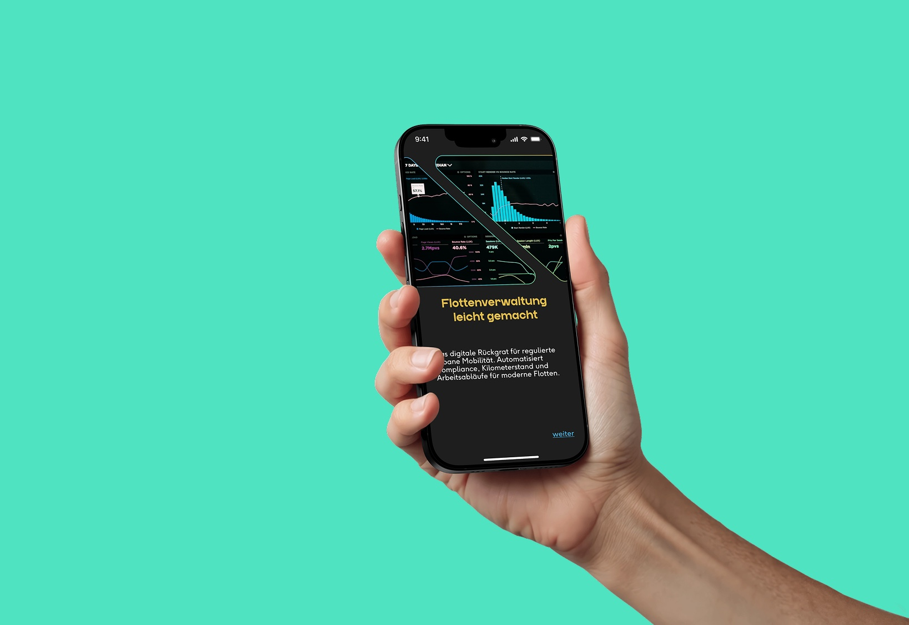
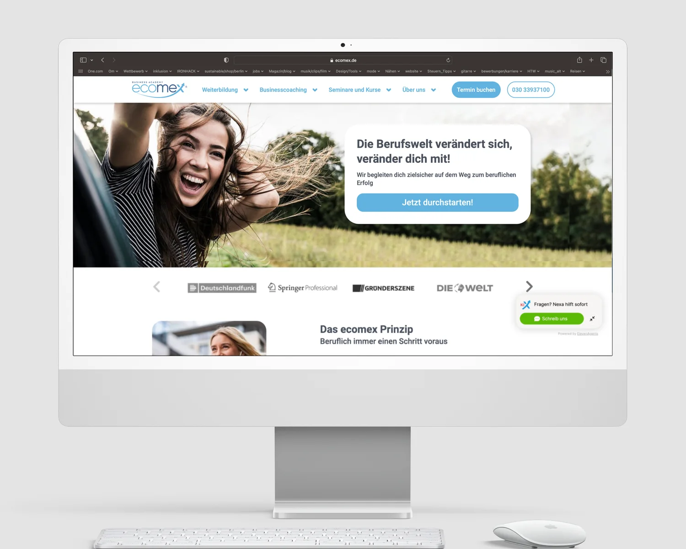
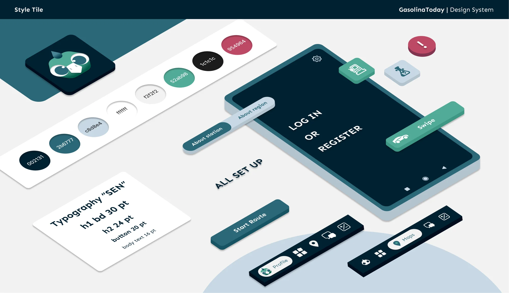
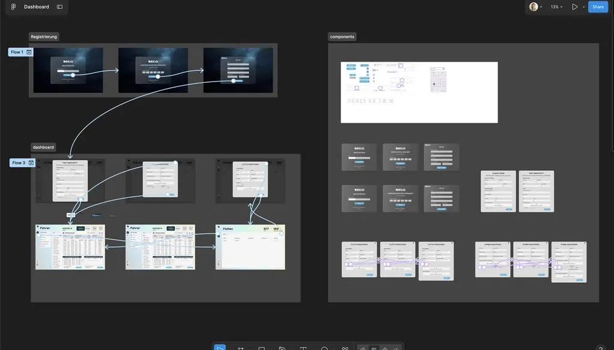
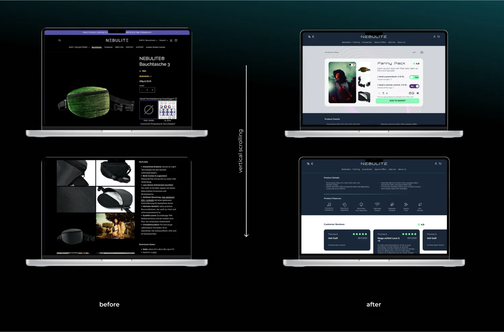
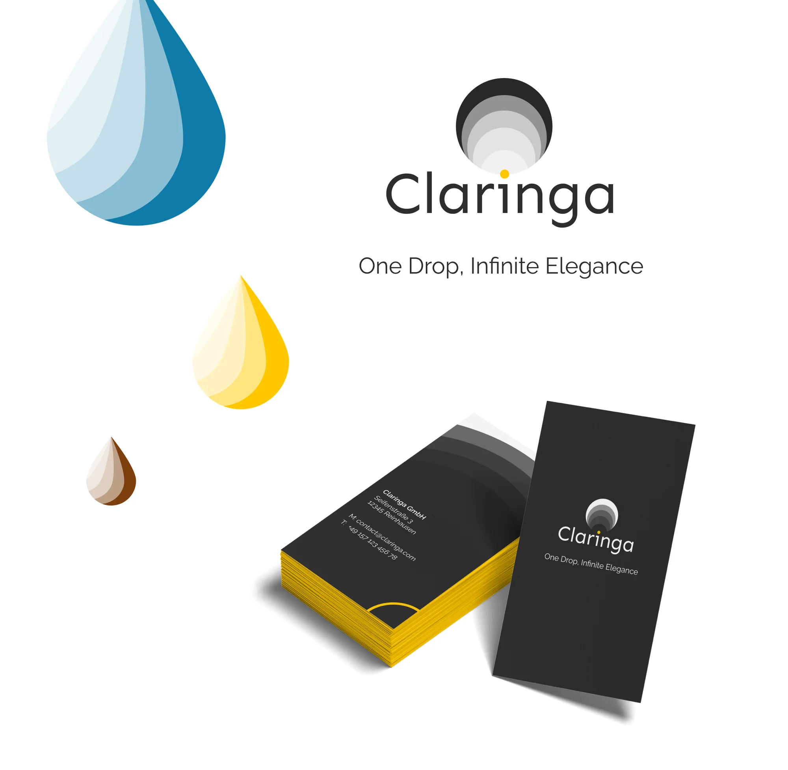
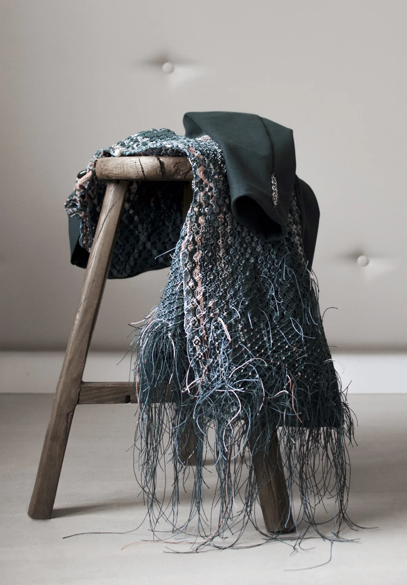
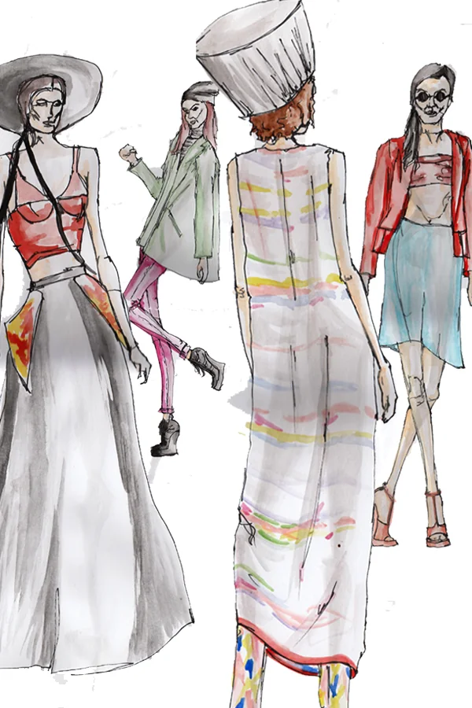

UX & Product Specialist
Ich bringe Zahlen in Bewegung.
Ich mache Muster und Reibungspunkte im Nutzerverhalten sichtbar und übersetze sie mit Research und Design in konkrete Verbesserungen für digitale Produkte und Customer Journeys.
- Interviews, Usability-Tests und Nutzungsdaten machen sichtbar, wo Menschen auf Hürden stoßen.Interviews, usability tests and usage data reveal where people run into obstacles.
- Ich übersetze Erkenntnisse in klare Abläufe und klickbare Prototypen, die sich testen lassen.I turn insights into clear flows and clickable prototypes that can be tested.
- Ich entwickle gezielte Verbesserungen und prüfe ihre Wirkung mit Feedback und Daten.I develop targeted improvements and check their impact with feedback and data.
Vom WireframeFrom wireframe bis liveto live
-

-

-

-

-

Weitere digitale Produkte, visuelle Konzepte und Projekte aus meinem Weg als Designerin.
Alle ProjekteVisual & Brand Work
 01Editorial & PrintEditorial & print
01Editorial & PrintEditorial & print

02Marke & VerpackungBrand & packaging
03Mode, Material & KonzeptFashion, material & concept
04Illustration & ExplorationIllustration & explorationEine Auswahl aus Editorial, Illustration, Branding und Fashion: als visuelle Basis meiner heutigen Arbeit an digitalen Produkten.
MehrGute Produkte beginnen damit, Menschen zu verstehen.
Mein Weg ins Design führte mich über Grafikdesign, Mode und Branding bis zu digitalen Produkten. Geblieben ist meine Neugier auf Menschen und darauf, wie sie mit den Dingen umgehen, die wir gestalten. Heute bringe ich diese Perspektive in UX- und Produktarbeit ein und verbinde User Insights, Design Thinking und Daten, um digitale Erlebnisse besser zu machen.
Über mich